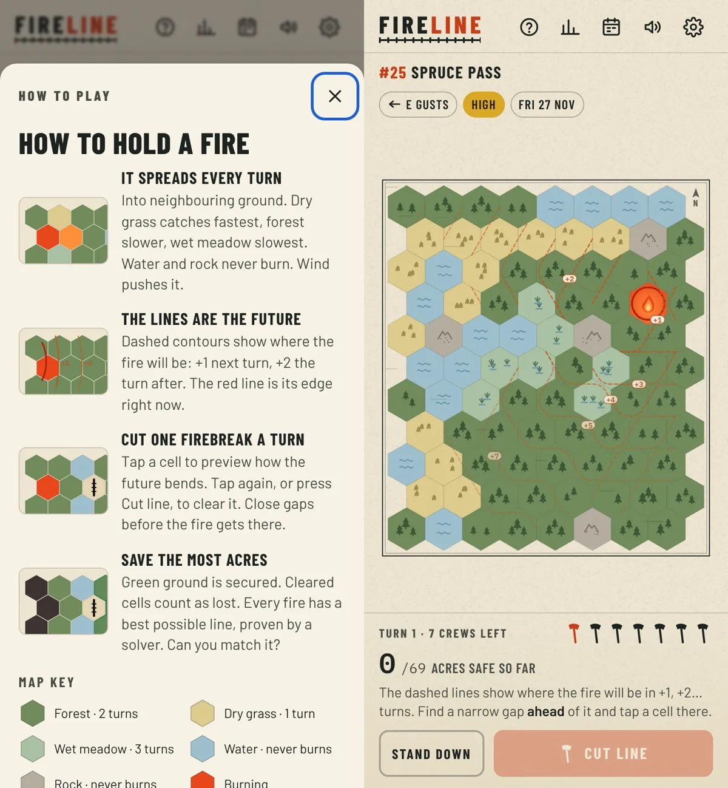
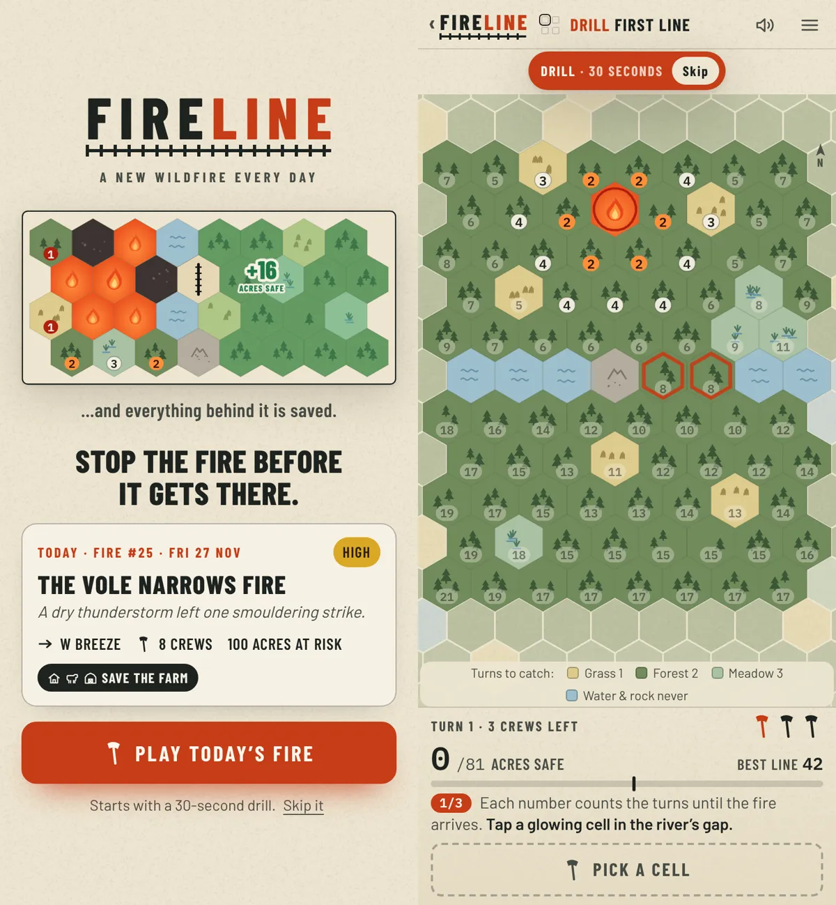
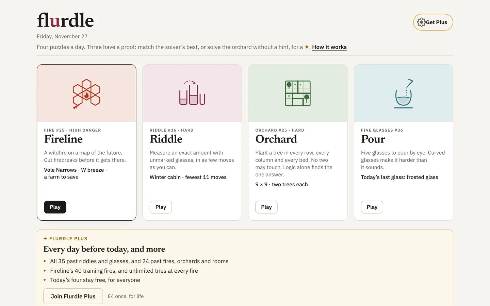

Case study · Product design · Flurdle
Fireline: designing a daily puzzle played on a map of the future
How I chose one game from twelve concepts, proved it had depth before drawing a screen, put it live on flurdle.com, and redesigned it when players found it small and hard to read.
- Role
- Solo: research, game and interaction design, art direction, sound, the puzzle generator and solver, and the build.
- Timeline
- Fire #1 on 3 November 2026, and a new fire every day since. Flurdle itself began on 24 October.
- Built with
- TypeScript and SVG, Web Audio, a Python generator and a CP-SAT solver, Vitest and Playwright. The site runs on Cloudflare, Supabase and Stripe.
- 12concepts generated and scored before one was chosen
- ~25%of the best possible save is what a player who only looks one move ahead manages
- 771fires in the first catalogue, each with a best line a solver proved
- 42 → 54 pxa cell on a phone, after players found the map small
The question
Before any game, I wrote down what makes people come back to a daily puzzle, and what makes them show it to someone else.
- People return to short challenges with a clear end, the same for everyone that day, where they can see themselves get better.
- A small action is satisfying when a small cause you planned has a large consequence: a wall that holds.
- What lingers is the counterfactual, "if I had cut there first". A game that shows the best line after you've committed plants that thought.
- Fresh every day, without making every puzzle by hand, means generating them, and proving each one's best answer, so the yardstick is real.
And one gap. Most strategy boards show the present and leave you to simulate the future in your head. A board that shows when things will happen, and redraws that future after every move, turns a hard mental simulation into something you can see. Fireline is built around that.
Twelve concepts, scored
I wrote up twelve concepts, each a different kind of thinking: tactics, chain reactions, perception, working out a hidden rule, guessing what other people will do. I scored each out of ten on ten things: originality, appeal, depth, retention, how quickly it's learned, mastery, shareability, visual identity, feasibility and room to grow.
All twelve, criterion by criterion
| Concept | Original | Appeal | Depth | Retention | Learn | Mastery | Share | Visual | Feasible | Grow | Total |
|---|---|---|---|---|---|---|---|---|---|---|---|
| Fireline | 7 | 8 | 8 | 8 | 9 | 8 | 7 | 8 | 8 | 9 | 80 |
| Cairn | 6 | 8 | 6 | 6 | 7 | 5 | 7 | 7 | 9 | 6 | 67 |
| Glow | 6 | 7 | 6 | 6 | 8 | 6 | 5 | 8 | 9 | 6 | 67 |
| Laws | 9 | 6 | 8 | 8 | 4 | 7 | 7 | 5 | 3 | 9 | 66 |
| Nocturne | 6 | 8 | 5 | 6 | 9 | 5 | 4 | 9 | 6 | 6 | 64 |
| Claim | 6 | 6 | 7 | 6 | 7 | 7 | 5 | 8 | 6 | 6 | 64 |
| Sundial | 8 | 7 | 6 | 6 | 5 | 6 | 5 | 9 | 5 | 6 | 63 |
| Gust | 8 | 5 | 7 | 6 | 6 | 7 | 3 | 6 | 8 | 6 | 62 |
| Hunch | 6 | 7 | 4 | 6 | 9 | 4 | 7 | 5 | 9 | 5 | 62 |
| Consensus | 7 | 8 | 3 | 8 | 9 | 2 | 9 | 5 | 2 | 7 | 60 |
| Crease | 5 | 7 | 5 | 5 | 6 | 4 | 6 | 8 | 6 | 5 | 57 |
| Watershed | 7 | 5 | 5 | 5 | 6 | 4 | 5 | 7 | 8 | 5 | 57 |
I gave Fireline a 7 for originality, not a 9: holding back a spreading threat is familiar, and the problem underneath is known graph theory. What's new is the board. Of the rest:
- Laws, a hidden law of physics each day, was the most original and the riskiest. Making fair, discoverable rules every day is an unsolved problem, and one confusing law ruins a day.
- Cairn and Glow had lovely chain reactions but shallow decisions underneath.
- Nocturne and Claim came down to dragging things until a number went up.
- Consensus, tap where everyone else will tap, couldn't be honest without real community data behind it.
Two ideas from the runners-up survived. Laws' daily character became each fire's weather and danger level, and Consensus' reason to come back tomorrow became tomorrow's forecast on the results screen.
Proving the depth before drawing a screen
A puzzle is only worth a daily habit if thinking ahead beats reacting. So before designing anything, I measured it. On prototype maps, I compared a player who always makes the best next move (perfect one-move lookahead) with the solver's optimal plan.
Looking one move ahead loses badly, so planning is the skill, and every fire that ships has to keep it that way: the generator rejects a fire unless the solver's plan beats greedy play by a clear margin.
The design, in one sentence
A wildfire spreads across a map that shows when it will reach every acre. Each turn you cut one firebreak, and try to bend that future so the fire burns as little as possible.
- Select, preview, commit. Tap a cell and the map redraws the future as if you'd cut there; tap again to cut. The preview comes from the same engine that plays the turn, so "+25 if cut" is exactly what happens.
- An incident map, not game UI. It borrows the symbols of real wildfire maps: black hatched firelines, a red perimeter, a danger dial, a rubber stamp at the end. By day it's warm topographic paper; at night, "night ops" charcoal.
- You can't lose, you save fewer acres. Every result is a number to beat tomorrow, measured against a best line the solver proves and labelled as exactly that.
- What it refuses. No streak freezes to buy, no currencies, unlocks, random rewards or notifications, and no invented community numbers. "41% matched the best line today" would need real data behind it, so I didn't build it rather than fake it.
Playing it before anyone else
I played fires by hand before looking at their solutions.
| Fire | What happened | Acres saved |
|---|---|---|
| #7, low danger | I matched the best line with a different plan from the solver's. I'd predicted 26 acres and the engine scored 26, so the rules are clear enough to plan with. | 26 · best 26 |
| #5, extreme | I kept my walls far from the fire. The best line built its wall right beside it, on the upwind side, where the fire crawls. | 26 · best 36 |
That second fire caught a mistake in my own help sheet. It said "build ahead of the fire, not beside it", and the best line did the opposite. It now says: look for the shortest line the fire can't beat; upwind it crawls.
Fixing the three weakest parts
Once it was built, I scored it again against the same brief. It came to about 8.4 out of 10; I didn't call it a 10, because a 10 is earned with real players over weeks. Then I fixed the three lowest scores.
| Part | The problem, and the change | Score |
|---|---|---|
| First session | The idea of a map of the future depended on reading. Now a coached lesson teaches it: pulsing marks on the gap, and three steps that react to what you do. | 6 → 8 |
| Progress | Until a wall closed, a cut seemed to do nothing, which hid the expert idea that cuts buy time. Now the preview says "Buys time: the fire reaches 12 acres later" and outlines the ground it slows. | 6 → 8 |
| Sharing | The text result carried none of the game's identity. Now there's a report card image in the game's own type, with its stamp, crew ledger and fire curve, and no map, so no spoilers. | 6 → 8 |
How it feels
Next came a pass on feel that changed none of the rules. I walked through every moment where the game has to answer a player, and wrote down what it did before and what it should do.
| Moment | Before | After |
|---|---|---|
| Finger down | Nothing until release. | A press marker appears under the finger. |
| A cell that can't be cut | A line of text. | The hex wobbles, a soft refusal sounds, and the line says why. |
| Cut, with nothing chosen | A disabled, dead button. | It always answers: "Pick a cell on the map first". |
| Ground made safe | A toast covered the fire's name. | Safety travels out from the cut that made it, the acres rise from the cell, and the chord grows with the size of the save. |
The rules I held it to: anticipation must be honest; rewards grow with what was achieved; every input gets an answer in the same frame, and no tap is dropped; nothing manipulative. Playing it frame by frame caught what no unit test would. The count-up after a save had never been visible, because the preview had already set the number, and the wave of safety had never actually played.
| Measured on an emulated phone | Before | After |
|---|---|---|
| Redrawing the map on hover, CPU slowed 4× | 3.6 ms | 0.07 ms |
| Redrawing the side panel | 16–31 ms | 1–2 ms |
| The worst frame of a turn, CPU slowed 4× | 88 ms | 58 ms |
What players found, and what changed
Ten days after the first fire, players were finding the game small and hard to read. The redesign:
- Smaller maps, bigger cells. From fire #13 a map is 6 × 9 instead of 8 × 11, so a cell on a 390 px phone is 54 px across, where it was 42.
- A number on every cell: the turns until the fire arrives, red for next turn and amber for the one after. The dashed contour lines I'd built the game around became a setting for the people who liked them.
- The goal always in view: "Best line 26" beside the score, and a bar that fills as ground is made safe.
Six days later, the first visit changed. Newcomers had met a page of rules; now a title screen plays the idea on a real strip of map in eight seconds, and one button starts a 30-second drill that leads straight into today's fire. The map lost its paper frame and took the whole screen: a cell on an iPhone 14 went from 47 px to 55. And because one fire ended a day's play a few minutes in, a day became three fires, each a step more dangerous, each with its own proven best line.
3 November: a page of rules, then the map

27 November: the idea in eight seconds, then a drill

Growing the week without growing the rules
From fire #17, each day of the week brings one mechanic: a cabin worth 10 acres that can't be cut, two crews a turn, or one backburn. Sunday's cabin and backburn is the most any fire carries. From #20 the cabin grew into a farm, a friend's suggestion: a house, a herd and a barn placed three ways round the fire, so the best line saves all three and the obvious one doesn't. Every mechanic is in the solver's exact model, so every fire still has a proven best line, and a fire is only accepted where its mechanic changes that line.
From one game to a site
Fireline is the front door of Flurdle, four puzzles a day: the fire, a riddle with unmarked glasses, an orchard to plant by logic alone, and five glasses to pour by eye. Each game keeps its own board; the frame around them is shared, and every rule in it rests on research I could point to:
- A calm first screen. People judge a page in 17 to 50 ms, and calm, familiar layouts are judged most appealing, so the front page went from ten type sizes to six.
- One unmistakable next step. One control carries at least twice the visual weight of the next.
- Motion on springs, in four tiers: a press in 120 ms, a move in 220, progress in 360, a solve in 600. With reduced motion asked for, nothing moves across the screen.
- Colour never alone. A puzzle's state is also its shape (an outline, half filled, solid, a diamond at the proof), checked under simulated colour blindness.
- Big enough to hit. Every control at least 24 px, every main action 44, checked at 360, 390 and 430 px wide.

The membership is designed the same way. Today's four are free for everyone; Flurdle Plus opens every day before today and unlimited fires, for £4 once. It's offered where people already look, never as a pop-up, and the next puzzle's Play button stays the strongest thing on the page.
How I measure it
The site keeps a weekly report, from data it already holds, in totals only and never about one player: how many new players come back the next day, after a week and after a month, against targets I set of 40%, 20% and 10%. What's still to prove is difficulty tuned on real players' results, not just the solver's measures and my own play.